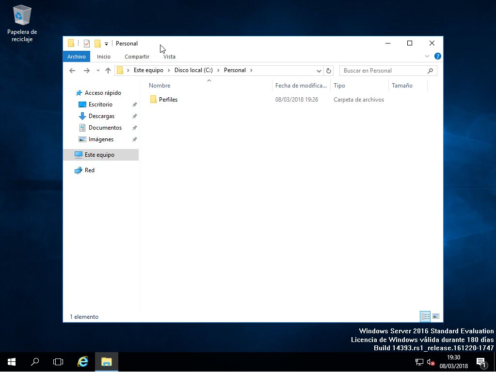
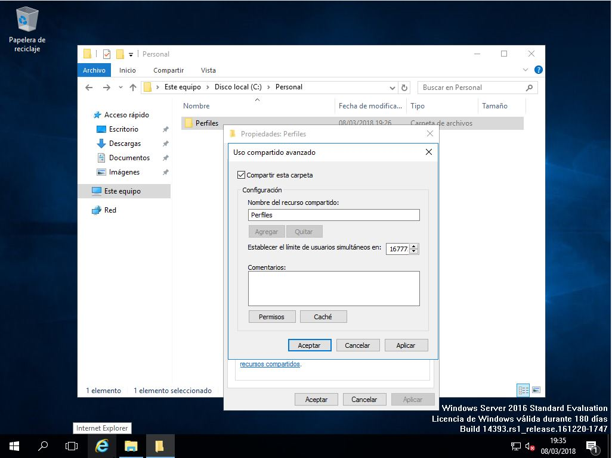
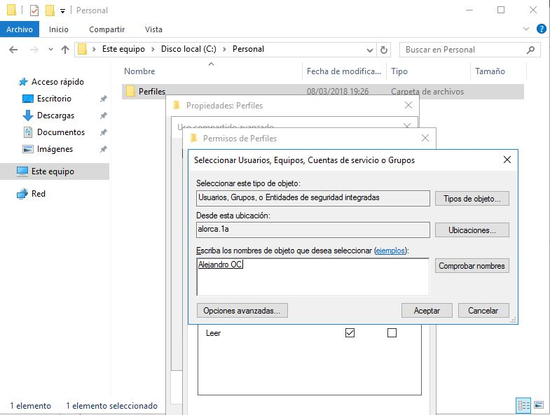
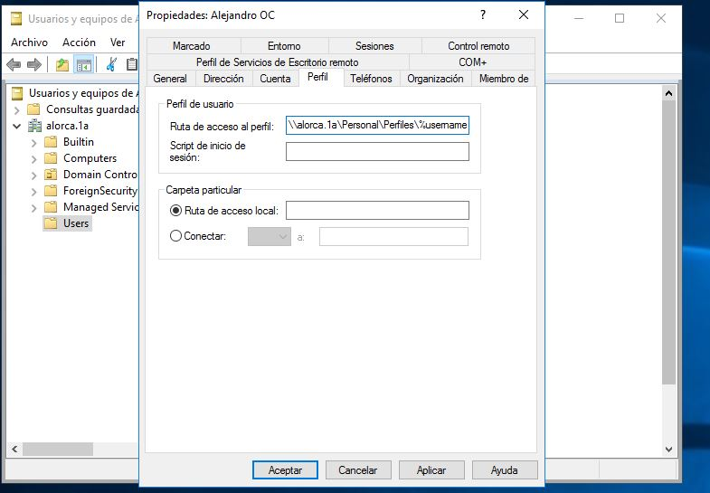
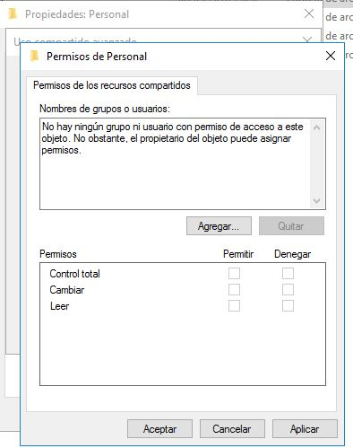
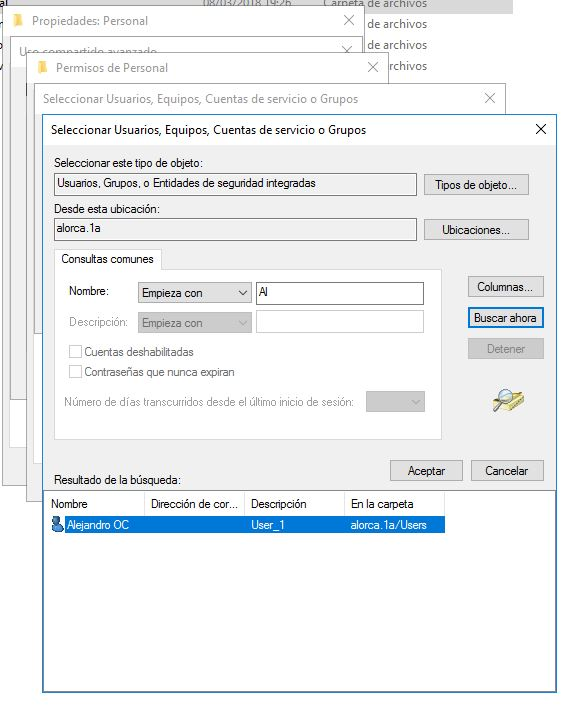
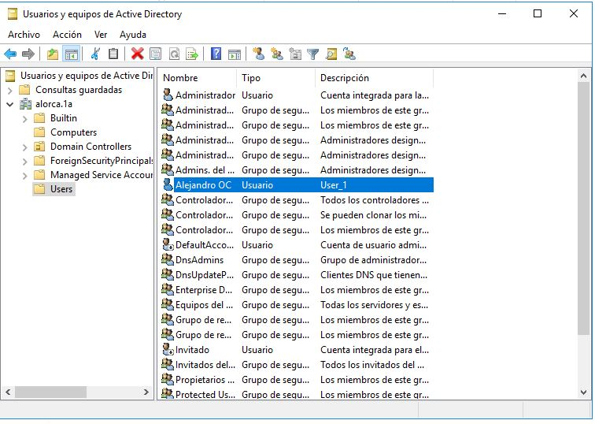

a.3) Centralizar la información.
Se explicará el procedimiento de manera gráfica
Crear un perfil de usuario móvil en Active Directory sobre Windows Server 2016
Crear la carpeta contenedora para los perfiles
Para crear la carpeta contenedora, comenzaremos por abrir el Explorador de archivos. Después, nos desplazamos hasta el lugar donde queremos crear la carpeta compartida (en nuestro caso, lo crearemos dentro de la carpeta Personal, que es la que hemos utilizado en artículos anteriores para contener a otras carpetas compartidas). Una vez allí, hacemos clic con el botón derecho del ratón sobre cualquier espacio libre del área de trabajo. Así, creamos una nueva carpeta y, a continuación, le damos el nombre Perfiles ( aunque tú puedes ponerle el nombre que prefieras).
Cambiar los permisos para dar el control a los usuarios de un grupo.
Una vez creada la carpeta contenedora, debemos cambiar sus permisos para que los usuarios del grupo que hemos elegido puedan tener todo el control sobre ella. Para lograrlo, comenzamos por hacer clic con el botón derecho del ratón sobre ella. Cuando aparezca la ventana Propiedades: Perfiles (Perfiles es el nombre de la carpeta) hacemos clic en la solapa Compartir. En la ventana Uso compartido avanzado, que aparece a continuación, hacemos clic en Compartir esta carpeta.
Esto hará que aparezca una nueva ventana con el título Permisos de Perfiles. A continuación, aparece la ventana Seleccionar Usuarios, Equipos, Cuentas de servicio o Grupos. Aquí podemos actuar de varias formas, por ejemplo, escribiendo el principio del nombre del grupo con el que queremos compartir la carpeta. Si existen varios nombres que comienzan por las letras que hemos escrito, aparecerá una ventana donde debemos elegir el nombre adecuado. De vuelta en la ventana Seleccionar Usuarios, Equipos, Cuentas de servicio o Grupos, vemos que ya aparece el nombre completo del grupo.
También podemos evitar que accedan a la carpeta el resto de los usuarios, en las opciones del principio. Una vez ya realizado estos pasos podemos cerrar todas las ventanas.
Cambiar el lugar donde el usuario o los usuarios guardan su perfil
A partir de ahora es cuando realmente vamos a crear el perfil móvil. Para conseguirlo, volveremos a la consola Usuarios y equipos de Active Directory y localizamos la cuenta (o cuentas) a la que queremos asignar el perfil móvil.
En la ventana de propiedades de la cuenta, hacemos clic sobre la solapa Perfil. En ella, debemos dar valor al cuadro de texto Ruta de acceso al perfil. El contenido seguirá el siguiente formato: \\servidor\carpeta_compartida\nombre_usuario.
Observa que, en lugar de utilizar el nombre de usuario (en nuestro caso, Alejandro OC), hemos utilizado la variable de sistema %username%. En realidad, el resultado es el mismo, pero será muy útil cuando cambiemos el perfil de varios usuarios al mismo tiempo.
Comprobar que los cambios han funcionado correctamente.
Ahora, para comprobar que nuestros ajustes han funcionado como deben, sólo tenemos que ir hasta un ordenador cliente e iniciar sesión con la cuenta que hemos configurado más arriba. Cuando se complete el inicio de sesión, podemos ir hasta el menú Inicio y hacer clic sobre el botón de la esquina superior izquierda. Mientras se inicia la sesión del usuario en el equipo cliente, veremos aparecer en el servidor una nueva subcarpeta, dentro de la carpeta Perfiles.

Crear en el servidor la carpeta compartida
Los pasos que debemos seguir para implementar esta característica comienzan por crear una carpeta en el disco duro del servidor, que actuará como contenedor de las carpetas personales de los usuarios, compartirla y asignarle los permisos correctos. Creamos en la unidad C una carpeta, que la llamaremos 'Personal', luego le pulsaremos en propiedades y en la sección de compartir. En ella, hacemos clic sobre Uso compartido avanzado, aquí, tendremos que activar la opción Compartir esta carpeta para que se habiliten el resto de las opciones. De forma predeterminada, el nombre que se utilizará para etiquetar el recurso compartido coincide con el nombre de la carpeta pero, si queremos, podemos cambiarlo, aunque yo lo dejaré como está.
Otro aspecto a tener en cuenta es que, si queremos que una carpeta compartida no se muestre cuando cualquier otro usuario del sistema obtenga la lista de carpetas compartidas por el servidor, deberemos terminar el texto incluido en el campo Nombre del recurso compartido con un carácter ‘$’. De forma predeterminada, el grupo Todos (es decir, todos los usuarios), tiene permiso de lectura sobre la carpeta que estamos compartiendo. Aunque es prácticamente lo mismo, parece más adecuado que los permisos sobre la carpeta pertenezcan al grupo Usuarios del dominio. Además, este grupo debe tener control total sobre la carpeta, por lo que a continuación procedemos a efectuar los cambios. En este caso hemos eliminado 'Todos'
Después, hacemos clic sobre el botón Agregar, para añadir el grupo Usuarios del dominio. Cuando aparezca la ventana Seleccionar Usuarios, Equipos o Grupos, podríamos escribir directamente el nombre del grupo Usuarios del dominio, pero en lugar de eso, lo buscaremos, para asegurarnos de que no cometemos errores al escribirlo. Hacemos clic sobre el botón Avanzadas, veremos que la ventana Seleccionar Usuarios, Equipos o Grupos, aumenta de tamaño e incluye más opciones. Ahora nos dirigimos al cuadro de texto que hay junto a Empieza con y escribimos el principio del nombre del grupo que estamos buscando.
Aceptamos los cambios.
Configurar una carpeta compartida en la cuenta de cada usuario
Una vez creada la carpeta, tendremos que configurar las cuentas de usuario para que la utilicen como lugar de almacenamiento en red. Esta tarea la completaremos desde la herramienta Usuarios y equipos de Active Directory. Accedemos a Usuarios y equipos de Active Directory, una vez abierta la herramienta, nos dirigimos al lugar donde se encuentran las cuentas de usuario sobre las que queremos actuar y las seleccionamos. Recuerda que podemos utilizar las teclas Mayúsculas (Shift) y Control (Ctrl) combinadas con el clic del ratón para realizar selecciones múltiples. Una vez seleccionadas las cuentas, hacemos clic sobre cualquiera de ellas con el botón derecho del ratón.
En esta ventana, elegiremos la solapa Perfil y, dentro de ella, activaremos la opción Carpeta particular. Podríamos hacer que la carpeta compartida se mostrara como una carpeta más dentro del árbol de directorios del cliente. En ese caso, elegiríamos la opción Ruta de acceso local y elegiríamos el lugar adecuado.
Sin embargo, pienso que queda más claro si el cliente percibe el almacenamiento compartido en el servidor como una unidad de almacenamiento en red, independiente de su árbol de directorios local. Por este motivo, haremos clic sobre Conectar y elegiremos una letra de unidad en la lista. En este caso, dejaremos el valor predeterminado (Z:). Lo siguiente será indicar el nombre y la ubicación de la carpeta compartida. Esto se hace siguiendo la siguiente sintaxis: \\servidor\carpeta_contenedora\carpeta_compartida